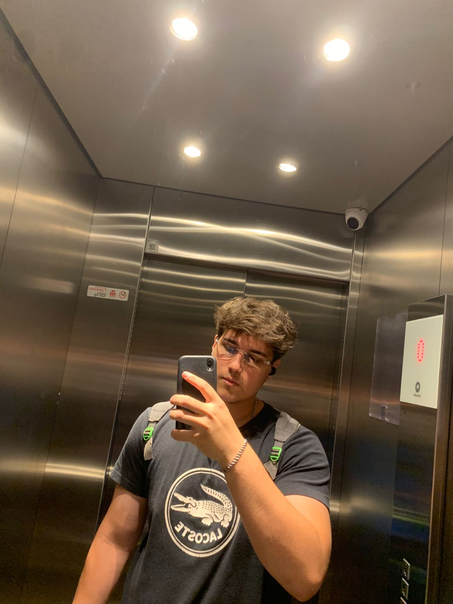

Olá! Sou Luis Eduardo Loureiro Pinho, estudante de Ciência da Computação e entusiasta de tecnologia e desenvolvimento. Possuo forte bagagem prática em suporte técnico, hardware e manutenção de computadores (experiência prévia como "micreiro"). Além disso, desenvolvi projetos de automação e robótica (como painel solar inteligente com Arduino) e foco meus estudos acadêmicos em arquitetura de computadores, lógica e modelagem de dados.
Você pode acompanhar meus códigos, projetos e atualizações diretamente no meu perfil do GitHub: Acessar GitHub (Keviinfree)